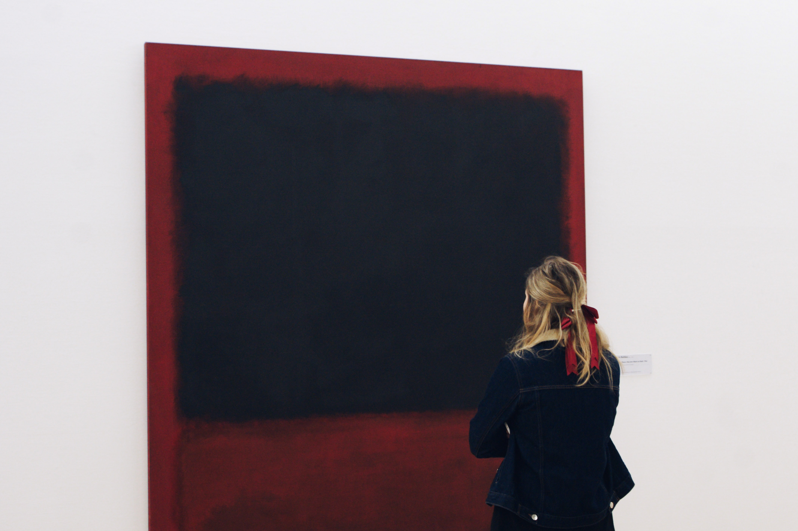
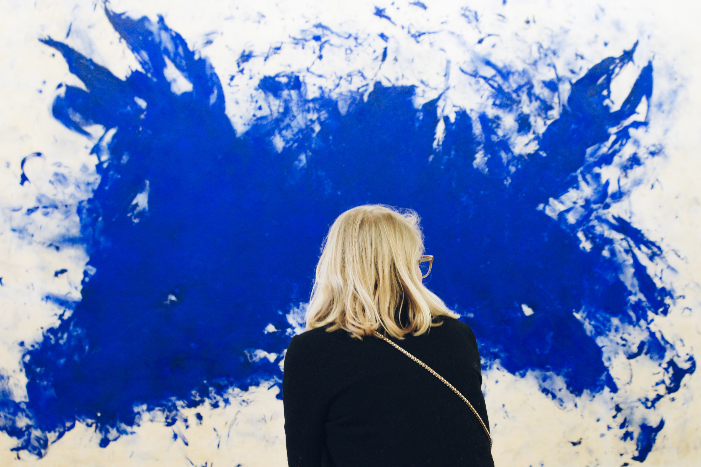
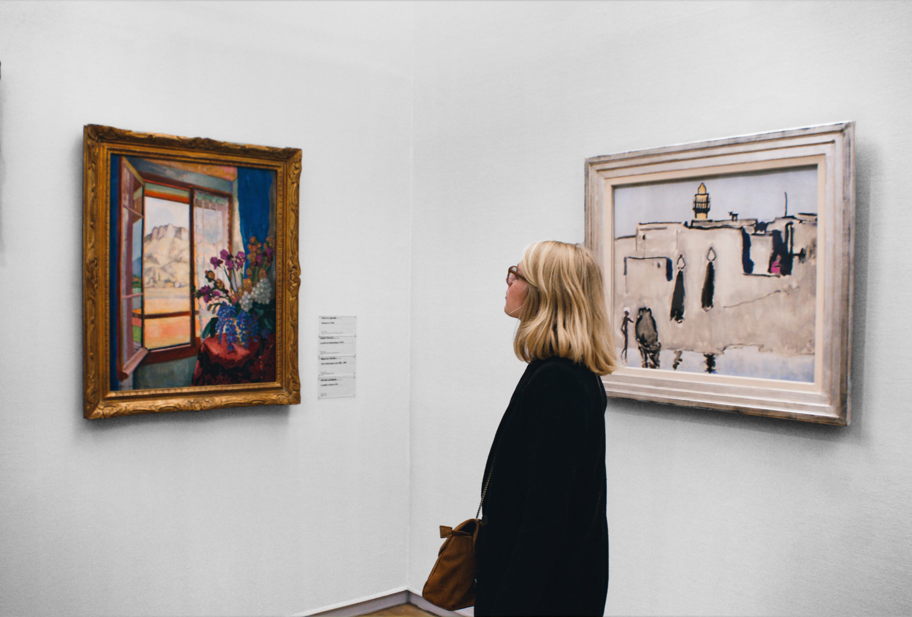
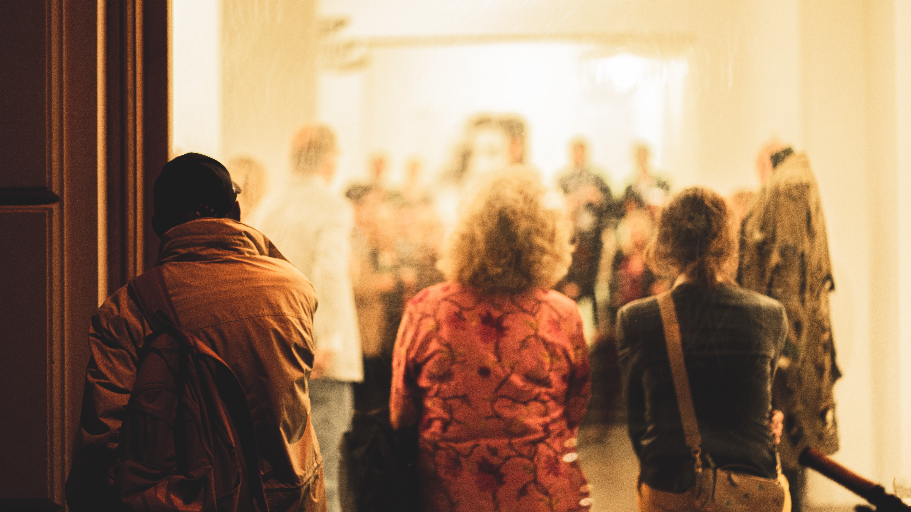
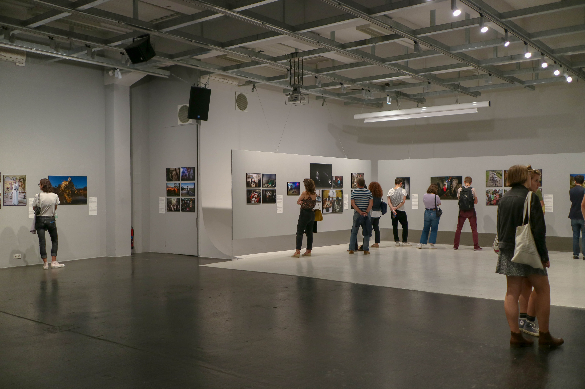
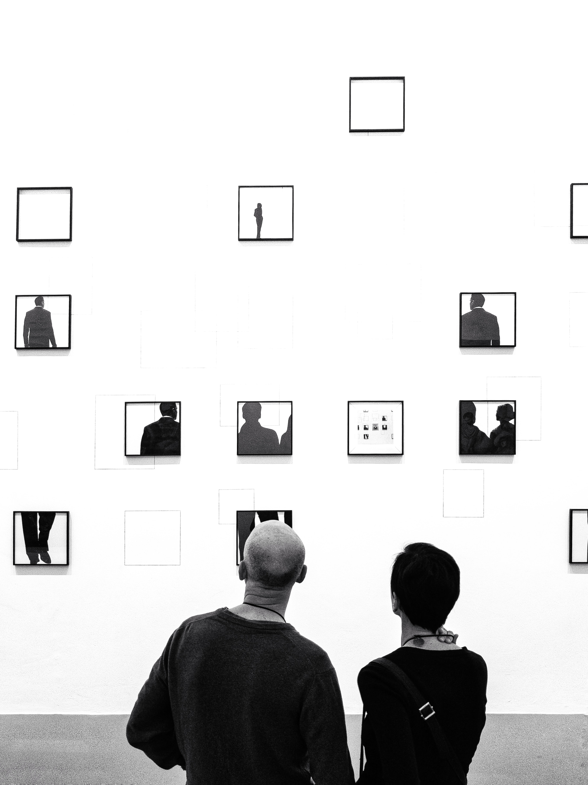
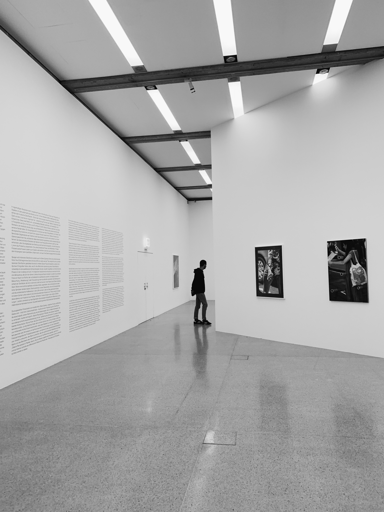

|  | 
|
 |
Ky projekt do t’i sjellë njerëzit të fushave të ndryshme, duke krijuar një lidhshmëri me artistët dhe artin e tyre. I gjithë ky proces mund të ndryshojë mënyrën se si ata e perceptojnë dhe bëhen pjesë e jetës kulturore dhe artistike të qytetit. Mbi të gjitha do të promovoj artin dhe kulturën si dhe do të integroj artistët, artin dhe kulturën në një pjesë më të madhe të popullatës. |
12/01/2021 13:00 | |
|  |  |  |
Ky projekt ka për qëllim të ofroj një prishje të rutinës jo vetëm të njerëzve por edhe të artistave. Ka për qëllim të pasuroj jetën e qytetarëve me përvoja dhe njohuri të ndryshme rreth artit dhe kulturës që kanë vet artistët pjesëmarrës. Ky projekt do t’i sjellë njerëzit të fushave të ndryshme, duke krijuar një lidhshmëri me artistët dhe artin e tyre. I gjithë ky proces mund të ndryshojë mënyrën se si ata e perceptojnë dhe bëhen pjesë e jetës kulturore dhe artistike të qytetit. Mbi të gjitha do të promovoj artin dhe kulturën si dhe do të integroj artistët, artin dhe kulturën në një pjesë më të madhe të popullatës. |
19/10/2021 15:30 | |
|  | 
|
 |
Kjo ekspozitë ka për qëllim të kujtojë jetët e artistëve të cilët gjithë kohën kanë shfrytëzuar duke krijuar piktura pa ngjyra. |
19/10/2021 15:30 | |